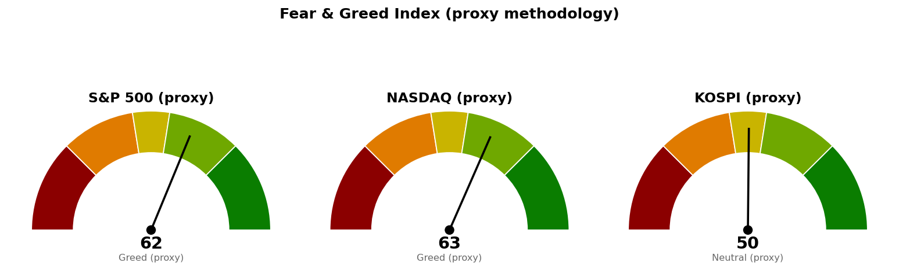

미국 지수·섹터·금리·유가·변동성지수는 한국시간 9월 12일 00시 30분(뉴욕 9월 11일 11시 30분, 정규장 개장 2시간 경과) 기준 장중 수치이며 마감값은 바뀝니다. 코스피와 니케이 225는 9월 11일 종가이되, 확정 종가가 제공되지 않아 같은 날 시간별 자료의 마지막 체결가로 채운 값이라 확정치와 다를 수 있습니다.
| 직전에 건 조건 | 판정 | 근거 |
|---|---|---|
| 종가로 7,667.62 회복 그리고 30년 금리 5.286% 아래 → 경고 해제 | 미충족 | 30년 금리 5.329%로 조건선 위. 지수는 장중 7,672.39로 조건선 위이나 마감 전 |
| 7,580.06 아래에서 정규장 마감 → 보유분 축소 검토 | 미충족 | 오늘 장중 저가 7,636.75로 조건선 위 |
| 브렌트유 101.21달러 아래로 되밀림 → 유가 전제 폐기 | 미충족 | 브렌트유 104.69달러, 장중 저가도 103.48달러 |
| CPI 발표 후 10년 금리가 4.944% 위로 더 가는지 | 위로 가지 않음 | 장중 고가 4.985%까지 올랐다가 4.938%로 되밀림 (전일 대비 -0.12%) |
| 에너지(XLE)가 전날 유가 급등을 따라 오르는지 | 따라 오르지 않음 | XLE +0.14%. 유가 자체가 되밀려 따라갈 상승분이 사라졌습니다 |
직전과 달라진 것은 하락을 만들던 두 축 중 유가 쪽만 풀렸다는 점입니다. 어제는 브렌트유 +6.51%와 30년 금리 +1.42%가 같이 작용해 11개 섹터 중 9개가 내렸고, 오늘은 유가가 -2.73%로 되밀리며 11개 중 9개가 올랐습니다. 금리는 30년 5.329%·10년 4.938%로 다년 최고 부근에 남아 있어, 경고를 건 근거 자체는 그대로입니다.
| 지수 | 현재/종가 | 등락 | 고가 | 저가 |
|---|---|---|---|---|
| S&P 500 (장중) | 7,672.39 | +1.06% | 7,677.02 | 7,636.75 |
| 나스닥 종합 (장중) | 26,422.12 | +1.31% | 26,431.22 | 26,283.11 |
| 코스피 (9/11 종가) | 6,919.23 | -1.63% | 6,948.83 | 6,802.50 |
| 니케이 225 (9/11 종가) | 64,006.42 | -1.94% | 64,312.02 | 63,208.63 |
S&P 500은 20일선(최근 20일 평균 가격선) 7,668.25를 4.14포인트 위에 두고 있습니다. 장중 저가 7,636.75는 그 아래였으므로 지금 위에 있는 것은 되찾은 상태이며, 정규장 종가로 확정돼야 조건 충족입니다. 50일선 7,603.91은 68.48포인트 아래에 있습니다. 상대강도지수(RSI, 최근 14일 동안 오른 폭과 내린 폭의 비율을 0~100으로 나타낸 값)는 51.4로 어제 44.2에서 중립선 위로 올라왔고, 하루 평균 변동폭(ATR)은 62.28포인트입니다.
위쪽에서 참고할 가격은 90일 박스 상단 7,793.95이며 현재가에서 121.56포인트, 하루 평균 변동폭의 1.95배 거리입니다. 이 상단 부근에서 위로 넘었다가 되밀린 자국이 남아 있어 파는 물량이 나오는 국면(매물 출회) 후보로 잡히고, 박스 안쪽 판정은 중립입니다. 아래쪽 박스 하단은 7,281.98입니다.
코스피는 9월 11일을 6,919.23으로 마쳤습니다. 어제 낮 브리핑 시점의 장중 6,862.35보다 높으므로 오후에 저가 6,802.50에서 올라와 마감한 것이며, 그래도 하루 -1.63%입니다. 니케이 225는 -1.94%로 더 밀렸습니다. 두 지수 모두 오늘 미국장의 상승은 반영하지 못한 상태로 주말에 들어갔습니다.
미국 섹터 상대강도(SPDR 업종 ETF 기준, 9월 11일 장중):
| 주도 | 등락 | 부진 | 등락 | |
|---|---|---|---|---|
| 기술 (XLK) | +1.74% | 헬스케어 (XLV) | -0.27% | |
| 커뮤니케이션 (XLC) | +1.27% | 유틸리티 (XLU) | -0.05% | |
| 산업재 (XLI) | +1.03% | 필수소비재 (XLP) | +0.11% |
어제 가장 많이 밀린 기술이 오늘 선두로 올라섰고, 부진 3개는 헬스케어·유틸리티·필수소비재로 전부 방어 성격 업종입니다. 어제와 정확히 뒤집힌 배열이며, 장기금리가 크게 내리지 않은 상태에서 나온 되돌림이라 하루로 끝날 수 있습니다. 임의소비재(XLY) +0.86%, 부동산(XLRE) +0.67%, 소재(XLB) +0.43%, 금융(XLF) +0.40%로 중간 구간도 전부 상승입니다.
에너지(XLE)는 +0.14%에 그쳤습니다. 어제 유가 급등을 따라가지 못했고 오늘은 유가가 되밀렸으므로, 어제 걸어 둔 확인 항목은 따라 오르지 않는 쪽으로 끝났습니다. 섹터 상대강도는 미국 ETF 기준으로만 제공되며 한국·일본은 지수 등락만 있습니다.
오늘 발표된 8월 지표를 계절조정(계절적 변동을 걷어낸 값) 물가지수에서 직접 계산하면 다음과 같습니다.
| 항목 | 전월 대비 | 시장 예상 | 전년 대비 |
|---|---|---|---|
| 헤드라인 CPI | +0.396% | +0.4% | +3.35% |
| 근원 CPI (식품·에너지 제외) | +0.290% | +0.2% | +2.45% |
전월 대비와 전년 대비는 미 연준 자료의 물가지수(8월 334.131 / 337.765)에서 계산한 값이고, 시장 예상치는 9월 11일자 CNBC 기사에 적힌 다우존스 컨센서스를 옮긴 것입니다.
헤드라인은 예상과 같고 근원이 예상을 웃돌았습니다. 근원 전월 대비 0.290%는 이 속도가 1년 이어질 경우 3.5% 수준이 되는 값이라, 연준 목표 2%와의 거리가 줄지 않았습니다. 전년 대비 근원 2.45%가 낮게 보이는 것은 지난해 같은 달과 비교한 값이기 때문입니다. 헤드라인을 밀어 올린 것은 이란 사태에 따른 에너지 가격이라는 게 오늘 기사들의 공통된 해석입니다.
| 항목 | 현재 | 전일 종가 | 등락 |
|---|---|---|---|
| 미 30년 국채 금리 | 5.329% | 5.361% | -0.60% |
| 미 10년 국채 금리 | 4.938% | 4.944% | -0.12% |
| 브렌트유 | 104.69달러 | 107.63달러 | -2.73% |
| WTI | 99.44달러 | 102.48달러 | -2.97% |
| 변동성지수 (VIX) | 15.87 | 17.84 | -11.04% |
근원 물가가 예상을 웃돌았는데 금리가 내린 조합은 발표 직후 움직임(10년 금리 장중 4.985%)이 되돌려진 결과입니다. 30년 5.329%는 어제 대비 0.032%포인트 내린 것뿐이라, 어제 경고를 건 금리 수준 자체는 유지되고 있습니다. 브렌트유는 장중 110.19달러까지 올랐다가 103.48달러까지 되밀려 하루 안에 6.71달러 폭을 냈고, 이 되밀림이 오늘 주식 상승과 변동성지수 -11.04%를 같이 설명합니다.
1. 8월 CPI, 근원 예상 상회 — 금리 인상 베팅 확대 (CNBC·Yahoo Finance, 9월 11일) 9월 16일 FOMC를 앞둔 마지막 물가 지표에서 근원이 예상을 웃돌면서, 인하가 아니라 인상 쪽으로 기울어 있던 시장 베팅이 더 굳어졌다고 보도됐습니다. 주식은 올랐지만 30년 금리가 5.329%에 남아 있는 상태라, 오늘 상승을 물가 우려의 해소로 읽으면 FOMC에서 되돌려질 위험을 떠안게 됩니다. 베팅 확률 수치는 우리 쪽 자료로 확인되지 않아 인용하지 않습니다.
2. 워시 연준 의장의 신뢰도가 시험대에 (CNBC 분석, 9월 11일) 물가 경고를 반복해 온 워시 의장이 이번 결정에서 실제로 움직이지 않으면 중앙은행 장악력에 의문이 생기고, 움직이면 장기금리에 한 번 더 부담이 얹힙니다. 어느 쪽이든 9월 16일이 이번 브리핑의 경고 해제 조건(30년 금리 5.286%)에 직접 닿는 날짜가 됩니다.
3. 유가 100달러 부근이 사모대출 차주를 압박 (CNBC, 9월 11일) 유가가 물가를 통해 금리를 다시 밀어 올리면 이미 높은 이자를 내는 고부채 차주부터 부담이 커진다는 내용입니다. 오늘 브렌트유가 -2.73% 되밀린 것은 이 경로를 하루 늦춘 것이고, 월요일 이란 관련 제재 대상 공개가 예정돼 있어 되밀림이 유지될지는 주말을 넘겨야 확인됩니다. 오늘 상승만 보고 위험자산을 늘리면 그 확인 없이 주말을 넘기게 됩니다.
| 지수 | 점수 | 구간 | 어제 |
|---|---|---|---|
| S&P 500 | 62.4 | 탐욕 | 57.8 |
| 나스닥 | 63.1 | 탐욕 | 58.4 |
| 코스피 | 50.3 | 중립 | 39.3 |

미국 두 지수는 탐욕 구간에서 하루 만에 4~5점 더 올라갔고, 변동성 항목이 80.3으로 가장 높습니다. 변동성지수 15.87이 그대로 반영된 값이라, 오늘 심리 개선의 대부분은 변동성 축소에서 나온 것입니다. 코스피 50.3은 어제 39.3에서 중립으로 올라왔습니다.
| 날짜 (한국시간) | 이벤트 | 확인할 것 |
|---|---|---|
| 9월 12일 05:00 | 뉴욕 정규장 마감 | S&P 500이 7,668.25 위에서 마치는지 |
| 9월 14일 (월, 기사 발언 기준) | 이란 관련 대형 은행 제재 대상 공개 | 브렌트유가 104.69달러 아래를 지키는지 |
| 9월 16일 | FOMC 금리 결정 | 30년 금리가 5.286% 아래로 내려오는지 |
| 9월 17일 | 주간 신규 실업수당 청구 | 고용 둔화가 금리 부담을 상쇄하는지 |
1. 신규 위험자산 편입 중단을 유지합니다. 경고 해제 조건 두 개 중 금리 쪽이 충족되지 않았고, 월요일 제재 공개까지 확인 없이 주말을 넘겨야 합니다. 2. 보유분은 유지하되 7,580.06을 판정선으로 둡니다. S&P 500이 이 가격 아래에서 정규장을 마치면 그때 보유분 축소를 검토하십시오. 장중 이탈만으로는 조치하지 않습니다. 3. 경고 해제는 두 조건이 같이 충족될 때만 합니다. S&P 500 종가가 7,668.25 위이고 30년 금리가 5.286% 아래면 해제하십시오. 한쪽만 충족되면 유지합니다. 4. 오늘의 섹터 배열을 근거로 업종을 갈아타지 마십시오. 기술 +1.74%·방어주 부진은 어제와 정확히 뒤집힌 하루치 되돌림이며, 30년 금리가 5.329%에 남아 있어 되돌아갈 수 있습니다.
이 문서는 참고 정보이며 투자자문이 아닙니다. 모든 수치는 위에 적은 기준 시각의 시장 자료에서 가져온 것이고, 투자 판단과 그 결과에 대한 책임은 투자자 본인에게 있습니다.